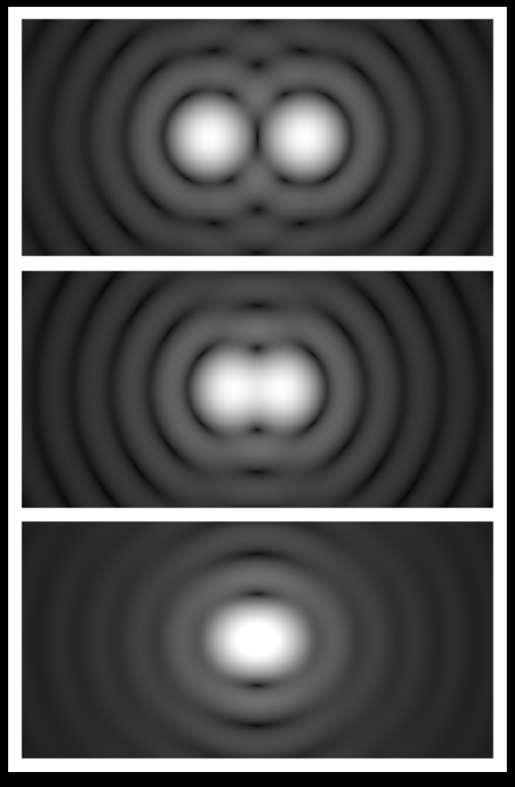

Forrige side🙂 🙁Vinkeloppløsning

Fra bakken er det en grensen for den beste mulige oppløsningsevnen ved perfekte værforhold (minimal fuktighet i lufta) på θ = 0.4″. Vinkler i astronomien blir ofte regnet i bueminutter ′ ($\frac{1}{60}$ grad) og buesekunder ″ ($\frac{1}{60}$ bueminutt). Kan du se hvordan vi kan regne om fre bueminutter og buesekunder til grader og radier? Gjør deg trygg på dette med en gang, du kommer til å få mye bruk for dette i hele resten av kurset!. Grunnen til denne grensen på 0.4″ kommer av atmosfæriske forstyrrelser. For bedre oppløsning kan man bruke romteleskop som Hubble Space Telescope (HST) med en oppløsningsevne på rundt 0.1″. Fra bakken finnes det nå også tekniske løsninger for å overkomme grensen på 0.4″. Ved å bruke adaptiv optikk, les mer her i Store Norske Leksikon, med en laserstråle for å modellere de atmosfæriske forstyrrelsene og på den måten deformerer man speilet i teleskopet til å korrigere for dette. Dermed kan man ved gode værforhold konkurrere med HST i oppløsningsevne også fra bakken. Neste side